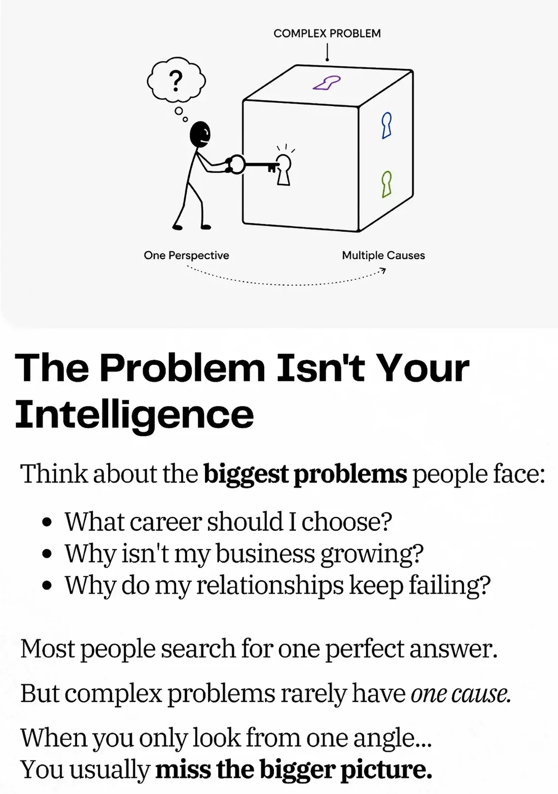

Cordia
Certifications
One skill, measured three ways. The same content serves a nurse, an electrician and a controller.
Domains are courses, not certifications. They teach the reasoning a kind of work demands. Certification measures the skill itself.
Why measure this
The problem isn’t your intelligence.
Complex problems rarely have one cause. So we measure six dimensions, not one score.
